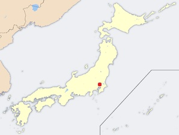
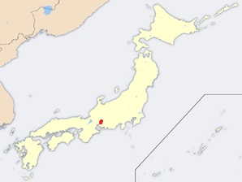

Geographie
Japan ist ein Inselstaat und besteht im Wesentlichen aus einer Inselkette, die sich entlang der Ostküste Asiens erstreckt. Die Hauptinseln sind Hokkaidō im Norden, die zentrale und größte Insel Honshū, sowie Shikoku und Kyūshū im Süden. Dazu kommen 6.848 kleinere Inseln (von min. 100m Umfang bei Hochwasser), die sich vor allem in der Seto-Inlandsee und in der Kette der Ryūkyū-Inseln konzentrieren. Da Japan ein Inselstaat ist, hat es keine direkten Nachbarländer. Indirekt grenzen jedoch Russland, Nordkorea, Südkorea, China und Taiwan an Japan.
Über den gesamten Archipel verläuft eine Gebirgskette, die mehr als zwei Drittel der Landmasse Japans ausmacht. Der höchste Berg Japans ist der Fujisan auf der Hauptinsel Honshū mit 3.776m über dem Meeresspiegel. Landwirtschaft, Industrie und Besiedlung sind auf rund 20% der Landfläche beschränkt. In den großen Ebenen haben sich die Hauptballungsgebiete entwickelt: Kantō (mit Tokio und Yokohama) in der Kantō-Ebene, Keihanshin (Ōsaka, Kyōto und Kōbe) in der Ōsaka-Ebene, Chūkyō (Nagoya) in der Nōbi-Ebene und Kitakyūshū-Fukuoka in der Tsukushi-Ebene. Aufgrund des Mangels an Flachland werden Berghänge durch Terrassenfeldbau kultiviert.
Klima
Die japanische Inselkette erstreckt sich in einem langen Bogen von Norden (45. Breitengrad, Hokkaidō) nach Süden (20. Breitengrad, Okinotorishima). Daher ist das Klima in Japan sehr unterschiedlich ausgeprägt; von der kalt-gemäßigten Klimazone in Hokkaidō mit kalten und schneereichen Wintern bis in die Subtropen in der Präfektur Okinawa. Dazu kommt der Einfluss von Winden – im Winter vom asiatischen Kontinent zum Meer und im Sommer vom Meer zum Kontinent. Im späten Juni und frühen Juli fällt im Süden ein Großteil des Jahresniederschlages als monsunartige Regenfront (梅雨前線, baiu zensen).
Im Frühsommer beginnt die Taifun-Saison, bei der vor allem der Süden und der Südwesten Japans von über dem Pazifischen Ozean entstehenden Wirbelstürmen betroffen sind (z.B. von Taifun Tokage und Taifun Conson im Jahr 2004). Statistisch gesehen erreichen Japan die meisten Taifune im September, obwohl sie im Pazifikraum im August am häufigsten sind. Der stärkste je aufgezeichnete Taifun Japans war der Ise-wan-Taifun von 1959. Seine Auswirkungen waren verheerend: Über 5.000 Menschen kamen ums Leben. Die Winde tragen auch dazu bei, dass Japan verstärkt von transnationaler Umweltverschmutzung betroffen ist.
Japan kann wegen seiner breit gefächerten geographischen Verhältnisse in sechs Hauptklimaregionen eingeteilt werden:
- Hokkaidō: nicht sonderlich starke Niederschläge, während der langen kalten Winter größere Schneeverwehungen
- Japanisches Meer: Der Nordwestwind im Winter bringt starken Schneefall. Im Sommer ist diese Region kühler als die pazifische Region, jedoch gibt es hier öfter Föhn.
- Zentrales Hochland: starke Temperaturunterschiede zwischen Sommer und Winter sowie Tag und Nacht, geringe Niederschläge
- Seto-Inlandsee: Die Berge der Region Chūgoku und Shikoku halten den Wind auf und führen zu einem ganzjährig milden Klima.
- Pazifikregion: kalte Winter mit geringem Schneefall und heiße trockene Sommer
- Nansei-Inseln (Ryūkyū-Inseln): subtropisches Klima mit warmen Wintern und heißen Sommern. Starke Niederschläge vor allem während der Regenzeit, regelmäßig auftretende Taifune.
Geologie
Japan liegt an der geologischen Bruchzone von vier tektonischen Platten der Erdkruste:
- die Nordamerikanische Platte im Norden
- die Eurasische Platte im Westen,
- die Philippinische Platte im Süden
- die Pazifische Platte im Osten,
die sich mit einigen Zentimetern pro Jahr gegeneinander bewegen. Teile der Pazifischen Platte schieben sich dort unter die Kontinentalplatte Eurasiens, was zu Vulkanismus und häufigen Erdbeben führt. Die anhaltende Bewegung (Subduktion) der Krustenteile, die zu einer langsamen Verkleinerung des Pazifiks führt, lässt deren großräumige Verschweißung nicht zu, im Gegensatz etwa zu Indien und den sog. Terraneen anderer Kontinentalränder.
Von den etwa 240 Vulkanen des pazifischen Feuerringes sind 40 aktiv. In der gesamten Region gibt es nahezu täglich leichtere Erdbeben, in größeren Abständen auch schwere (z. B. Großes Kantō-Erdbeben 1923, Erdbeben von Kōbe 1995 oder das Tōhoku-Erdbeben 2011). Jedes Jahr findet zum Jahrestag des Kanto-Erdbebens im September eine Übung zum Katastrophenschutz statt. Besonders Tokio ist einem hohen Erdbebenrisiko ausgesetzt (siehe Erdbeben in Tokio).
Am 11. März 2011 erschütterte ein heftiges Erdbeben den ganzen Staat. Das Tōhoku-Erdbeben war eines der stärksten Beben in der japanischen Geschichte mit einer Stärke von 9,0 MW. Durch das Beben wurden ein Tsunami sowie eine Serie katastrophaler Unfälle im Kernkraftwerk Fukushima-Daiichi ausgelöst.
In den letzten tausend Jahren starben in Japan über 160.000 Menschen durch Tsunamis. Das Land verfügt heutzutage durch Messbojen im Pazifischen Ozean über ein effektives Tsunami-Frühwarnsystem. Für die Bevölkerung finden regelmäßig Trainingsprogramme statt, viele japanische Küstenstädte schützen sich durch das Errichten hoher Deiche. Diese Wälle aus Stahlbeton sind teilweise 10 Meter hoch, bis zu 25 Meter tief und mit stabilen Metalltoren ausgestattet.
Flora und Fauna
Im Inland Japans finden sich eine Reihe von Gebirgsketten, die die Waldgrenze überschreiten. Verglichen mit der Enge des Lebensraums gibt es eine Vielzahl von Arten. Durch die Position als vorgelagerte Inselkette hat sich eine zwar mit „Kontinentalasien“ verwandte, aber dennoch vielfach eigenständige Flora und Fauna entwickelt. Die Ogasawara-Inseln (auch: Bonin-Inseln), 1000km südöstlich von Tokio, werden wegen ihrer endemischen Spezies oft mit den Galapagosinseln verglichen.
Japan liegt im Schnittpunkt von drei Ökoregionen. Die Hauptinseln und die nahegelegenen Nachbarinseln sind Teil der Paläarktischen Florenregion. Die Ryūkyū-Inseln sind Teil der Indomalaiischen Region, während die Ogasawara-Inseln zu Ozeanien gerechnet werden.
- Säugetiere
- An Großsäugetieren gibt es unter anderem den Braunbären auf Hokkaidō, auf Honshū den asiatischen Schwarzbären, den Sikahirsch und den japanischen Serau (eine Ziegenantilope). Unter den einheimischen Arten findet sich der Japanmakak, der auf der Shimokita-Halbinsel in der Präfektur Aomori heimisch ist und damit die nördlichste Affenpopulation der Welt bildet.
- Die starke Besiedlung an den Küsten und in den japanischen Ebenen hat dazu geführt, dass einige Säugetierarten ausgestorben sind, so der Honshū-Wolf (Canis lupus hodophilax), der Japanische Seelöwe (Zalophus japonicus), der Seeotter und der Fischotter. Hunde und Katzen gibt es in Japan in einer breiten Auswahl an Rassen. Als typisch japanische Hunderasse wird der Shiba Inu angesehen.
- Vögel
- In Japan sind über 500 verschiedene Vogelarten gesichtet worden. Da die Inselgruppe in jeder Richtung von Meer umgeben ist, gehört eine Vielzahl davon zum Wassergeflügel. Japan ist eine wichtige Zwischenstation für Zugvögel. In Sibirien brütende Vögel finden hier ihr Winterquartier, während die in Japan brütenden Vögel im Winter in Richtung Südostasien ziehen. Auf diese Weise findet eine Vielzahl von Vogelarten ihren Weg nach Japan. In den Städten finden sich Krähen (besonders die Aaskrähe), Spatzen, Tauben und Rauchschwalben. Nationalvogel ist der Buntfasan. Der Nipponibis ist in Japan in freier Wildbahn ausgestorben. Allerdings leben immer noch einige hundert in einem Schutz- und Aufzuchtszentrum auf Sado sowie in freier Wildbahn in der Shaanxi-Provinz in China.
- Meeresbewohner
- Die japanischen Küstengewässer sind von kalten und warmen Meeresströmungen durchzogen, die an ihren Berührungslinien gute Wachstumsbedingungen für Plankton bieten. Das Land liegt an einer Belastungskante der Lithosphäre, durch deren Verschiebungen sich eine zerklüftete Küstenlinie gebildet hat. Dadurch bietet sich ein guter Lebensraum für eine Vielzahl von Fischarten. Die Gewässer vor der Sanriku-Küste (Präfekturen Miyagi und Iwate) und die nördlich anschließenden Meeresgebiete bis zu den Kurilen sind einer der drei reichsten Fischgründe in der Welt. In den Flüssen gibt es eine reichhaltige Zahl von Fischarten, begünstigt durch das regenreiche Klima. In den Brackwassergebieten der Flussmündungen gibt es eine Vielzahl von Muscheln. Problematisch ist die Gewässerverschmutzung und die Betonierung der Flussbetten, die zu einem Aussterben zahlreicher Arten geführt hat. In den Siebzigern gab es eine starke Umweltbewegung, die erste Erfolge dagegen verbuchen konnte. Wegen seiner Politik, den Walfang mit Beharrlichkeit gegen Tierschutz-Organisationen zu verteidigen, gerät Japan immer wieder in die Kritik.
- Flora
- Japan ist zu großen Teilen von Bergwäldern bedeckt. Eine Vielzahl der einheimischen Arten ist auf diese Umgebung spezialisiert.
- Kulturpflanzen
- Wichtigste Kulturpflanze in Japan ist der aus Korea eingeführte Reis, genau genommen Oryza sativa japonica (Kurzkornreis). Das Stroh wird für die Herstellung von Tatami verwendet. Historisches Arme-Leute-Essen ist die Hirse, da der Reis als Steuer entrichtet werden musste. Ebenfalls angebaut werden verschiedene Bohnensorten, unter anderem die Adzukibohne, und eine Reihe von Gemüsen, darunter Ingwer, Rettich und Spinat. Heimisch sind außerdem verschiedene Zitruspflanzen wie die Amanatsu, darüber hinaus wurde eine Reihe von Obst- und Gemüsesorten eingeführt. Zur traditionellen japanischen Küche gehören außerdem Seetang (beispielsweise Nori) und Meeresalgen (Wakame). Traditionelle japanische Häuser werden unter anderem aus dem Holz der Sicheltanne gebaut. Von nationaler Bedeutung sind die Teepflanze und verschiedene Binsenarten zur Herstellung der Tatami-Matten (Flatterbinse und Dochtbinse).

- Der Shiba-Inu, eine beliebte Hunderasse


- Wälder bedecken 66% der Landesfläche


- Die Koi werden in Japan als Zierfische gezüchtet


- Die Japanische Rotkiefer ist der am weitesten verbreitete Nadelbaum Japans

Geschichte
- Jōmon-Periode
- In der Zeit von 10.000 v. Chr. bis etwa 300 v. Chr. wanderten Menschen (vermutlich) aus Zentralasien, Sibirien und dem südpazifischen Raum in das Gebiet des heutigen Japan ein.
- Yayoi-Periode
- Erste bestätigte Kontakte mit dem chinesischen Reich gab es von etwa 300 v. Chr. bis etwa 300 n. Chr.
- Kofun-Periode
- Große Schlüsselgräberanlagen stammen aus der Kofun-Periode von etwa 300 bis 710 n. Chr. Es gab einen engen politischen Kontakt mit dem Nachbarland Korea und Einwanderung von Korea nach Japan. Ab dem 5. Jahrhundert fand die Übernahme der Chinesischen Schrift statt.
- Nara-Epoche (710–794)
- In der Nara-Periode wurde der Buddhismus stark gefördert. Die Staatsform lehnte sich an das chinesische Vorbild an.
- Heian-Epoche (794–1185)
- Aufschwung der höfischen Kultur in Heian-kyō (Kyōto), vor allem Dichtung und Literatur. Die Macht des Kaisers wurde allmählich geschwächt und Kriegerfamilien etablierten sich. Zum Ende der Heian-Periode begründete die Minamoto-Familie das erste Shōgunat.
- Kamakura-Epoche (1192–1333)
- Während der Kamakura-Periode unternahm Kublai Khan zwei Invasionsversuche in Japan, die jedoch durch später als göttlich interpretierte Taifune (Kamikaze, Götterwind) verhindert wurden.
- Muromachi-Epoche (1333–1573)
- Die mächtigen unabhängigen Daimyō unterhielten ihre eigenen Armeen. Das Shōgunat verlor die Kontrolle, und die „Zeit der streitenden Reiche“ (sengoku jidai) begann.
- Sengoku-Epoche (1477–1568)
- Die drei Reichseiniger (Oda Nobunaga, Toyotomi Hideyoshi, Tokugawa Ieyasu) beendeten in der Azuchi-Momoyama-Epoche (1568 bis 1603) den über 100-jährigen Bürgerkrieg. Vor der folgenden Abschließung Japans liegt die Epoche des Namban-Handels, des Handels mit Portugiesen, Spaniern und Niederländern von 1543 bis 1639.
- Edo-Ära (1603–1867)
- Während der Abschließung Japans in der Edo-Zeit waren Aus- und Einreise für Japaner und Ausländer verboten. Mit Ausnahme von beschränktem Austausch mit China und den Niederlanden, denen 1639 als einzigen Europäern der Aufenthalt in Japan auf der künstlichen Insel Dejima vor Nagasaki gestattet wurde, bestand kaum Kontakt zu anderen Staaten. Die Tokugawa-Familie behielt für über 250 Jahre die Kontrolle über die anderen Daimyō. Diese Periode war von großem Wohlstand für das japanische Volk geprägt. Die Bevölkerung wuchs stetig. Das heutige Tokio wuchs in dieser Zeit zur größten Metropolregion der Welt. 1854 segelte US-Admiral Matthew Perry mit seiner Flotte von vier Kriegsschiffen unbehelligt in den Hafen des heutigen Tokio, um einen Brief des US-Präsidenten Millard Fillmore zu übergeben, in dem dieser die Tokugawa-Regierung zum offenen Handel mit den Vereinigten Staaten auffordert. Die Leichtigkeit, mit der Perry in den Hafen einlaufen konnte, offenbarte die Schwäche des Tokugawa-Regimes. Dies führte zu einem Aufstand regionaler Herrscher und mündete letztlich in eine Wiedereinsetzung des Kaisers, dem nur wenig reale politische Macht verliehen wurde.
- Meiji-Ära (1868–1912)
- Die Reform des Kaiserhauses unter dem Meiji-Tennō ab 1868 (Meiji-Restauration und Moderne) beendete die Zeit des Kriegeradels und läutete die Moderne ein. Das Land erhielt eine moderne Verfassung und ein Parlament, so dass Japan eine konstitutionelle Monarchie wurde. Korea wurde 1910 von Japan kolonialisiert, wodurch die Beziehungen noch heute belastet werden.
- Taishō-Ära (1912–1926)
-
 Japanische Mutter mit Zwillingen, 1917
Japanische Mutter mit Zwillingen, 1917 - Im Ersten Weltkrieg (1914 bis 1918) stand Japan auf Seiten der Entente und übernahm nach Kriegsende deutsche Territorien. Die Taishō-Ära war durch kulturelle Dynamik und wirtschaftlichen Aufschwung gekennzeichnet. Es war eine Zeit der demokratischen Experimente mit einem parlamentarischen System. Letztendlich scheiterte die Demokratie durch Instabilität, ganz ähnlich wie Deutschland während der Weimarer Republik. Das Militär übernahm mehr und mehr die faktische Kontrolle.
- Shōwa-Ära Teil 1 (1926–1945)
-
 Japaner rücken in Shenyang ein. 1931
Japaner rücken in Shenyang ein. 1931 - 1931 besetzte Japan den Nordosten Chinas und gründete 1932 den abhängigen Staat Mandschukuo (Mandschurei). 1937 eroberte Japan weitere Territorien von China. Japan vertrieb mit Unterstützung Siams und diverser Einheimischer die europäischen Kolonialmächte aus den südostasiatischen Ländern, um sein eigenes Kolonialreich auszubauen. Die USA sahen ihre Interessen in Asien (vor allem ihre Kolonien wie die Philippinen) gefährdet und reagierten mit zahlreichen Sanktionen, einem Embargo und dem Einfrieren japanischen Vermögens im Ausland. Im Dezember 1941 griffen daraufhin japanische Truppen den US-Stützpunkt Pearl Harbor auf Hawaii an. Damit weitete sich der Zweite Weltkrieg auf den Pazifischen Ozean aus. Nicht nur in China, sondern auch in den anderen japanischen Territorien Südostasiens geschahen Kriegsverbrechen, z. B. Zwangsprostitution, das Massaker von Nanking und Experimente an Menschen durch die Einheit 731. Bis 1945 gelang es alliierten Truppen Gebiete nahe den japanischen Inseln zu erobern, doch besonders auf kleineren Inseln – auch fernab des japanischen Kernlandes – tobten noch heftige Kämpfe. Der Kaiser sowie der Premierminister und seine Anhänger wollten Friedensverhandlungen aufnehmen, doch das Militär hatte mehr Macht. Am 6. August 1945 warfen die US-Amerikaner eine Atombombe über der Stadt Hiroshima und am 9. August eine weitere über Nagasaki ab. Noch heutzutage leiden viele Menschen und ihre Nachkommen unter den Folgen der Strahlenkrankheit (Hibakusha). Nach den Atombombenabwürfen und dem Kriegseintritt der Sowjetunion am 8. August 1945 kapitulierte Japan am 15. August 1945 bedingungslos, der Kaiser verlas um 12.00 Uhr mittags den „kaiserlichen Erlass zur Beendigung des Krieges“, der im Radio übertragen wurde.
- Shōwa-Ära Teil 2 (1945–1989)
- Nach der Kapitulation begann der Wiederaufbau, zunächst unter der Alliierten Besatzung, die 1952 offiziell beendet wurde. Vom ehemaligen Kriegsgegner Vereinigte Staaten wurde Japan als Vorposten gegen den Kommunismus in das westliche Bündnissystem integriert. Obwohl nicht in den Marshallplan eingebunden, erhielt Japan unter anderem durch das GARIOA-Programm wirtschaftliche Aufbauhilfe von den Vereinigten Staaten. Es setzte vor allem mit Beginn des Koreakrieges eine rasante wirtschaftliche Entwicklung ein, in der japanische Firmen Schritt für Schritt Marktanteile in allen wichtigen Schlüsselindustrien erobern konnten. Japan erwies sich als stabile, friedliche Demokratie.
- Heisei-Ära (1989 bis heute)
- Faule Bankenkredite und überbewertete Immobilien ließen Anfang der 1990er Jahre die Bubble Economy platzen, und Japan rutschte in eine Phase von Deflation und hoher Staatsverschuldung, die wirtschaftliche Stagnation auf hohem Niveau bedeutete. Unternehmen und Banken wurden behutsam saniert, und allmählich kommt es wieder zu einem wirtschaftlichen Aufschwung.


Bevölkerung
Die letzte Volkszählung aus dem Jahr 2010 weist eine Gesamtbevölkerung Japans von 128.056.026 Menschen aus. Die Einwohnerzahlen sind aber seit Jahren rückläufig, so gab das Ministerium für Innere Angelegenheiten und Kommunikation am 31. März 2012 eine Gesamtbevölkerung von 126.659.683 an.
Die japanische Gesellschaft ist ethnisch und linguistisch weitgehend homogen. Trotzdem lassen sich in Japan unterschiedliche Bevölkerungsgruppen ausmachen, in erster Linie nach Generation, Geschlecht, Bildungsstand und direkt damit zusammenhängend Erwerbssituation und Einkommen sowie nach Stadt und Land.
Die durchschnittliche Lebenserwartung der japanischen Bevölkerung ist mit 82,12 Jahren nach der ehemaligen portugiesischen Kolonie Macau und dem Kleinstaat Andorra die dritthöchste weltweit.
Aktuelle Probleme der japanischen Gesellschaft sind ein Rückgang der Geburtenziffer, Überalterung und Jugendarbeitslosigkeit. Politisch und gesellschaftlich scheint es unmöglich, eine verstärkte Immigration zuzulassen, die hilfreich wäre, um der Überalterung entgegenzuwirken.
Die zehn größten Städte
- Tokio
- 
- 9,14 Mio. Ew.
- 14.723 Ew./km²
- Yokohama
- 3,71 Mio. Ew.
- 8.531 Ew./km²
- Ōsaka
- 2,69 Mio. Ew.
- 12.100 Ew./km²
- Nagoya
- 
- 2,28 Mio. Ew.
- 6.976 Ew./km²
- Sapporo
- 1,95 Mio. EW
- 1.727 Ew./km²
- Kōbe
- 1,54 Mio. EW
- 2.782 Ew./km²
- Kyōto

- 1,52 Mio. EW
- 1.773 Ew./km²
- Fukuoka
- 1,47 Mio. EW
- 4.463 Ew./km²
- Kawasaki
- 1,46 Mio. EW
- 10.127 Ew./km²
- Saitama
- 1,25 Mio. EW
- 5.759 Ew./km²
Sprache und Schrift
Die Landessprache ist Japanisch und wird von nahezu der gesamten Bevölkerung und den meisten Minderheiten gesprochen. Es existieren zahlreiche regionale Dialekte. In der Schule wird als Fremdsprache am häufigsten Englisch gelehrt, es wird jedoch häufig kritisiert, dass sich der japanische Englischunterricht zu sehr auf das Bestehen des TOEIC-Tests konzentriere und nur unzureichende Kommunikationsfähigkeiten vermittele. Die zweithäufigste Fremdsprache ist Chinesisch, Deutsch liegt auf dem dritten Platz.
Die japanische Sprache verwendet neben den chinesischen Schriftzeichen (Kanji) zwei eigene Silbenschriftsysteme (Hiragana und Katakana), die von chinesischen Schriftzeichen abgeleitet sind. Straßen, Bahnhöfe und Ähnliches sind meist in Kanji und in lateinischer Umschrift (Rōmaji) beschildert.
Minderheitensprachen autochthoner Völker in Japan sind das nicht mit dem Japanischen verwandte Ainu im Nordteil der Insel Hokkaido und die mit dem Japanischen verwandten, aber eine eigenständige Gruppe bildenden Ryūkyū-Sprachen auf den gleichnamigen Inseln.
Religion
In Japan haben immer mehrere religiöse Glaubensformen nebeneinander bestanden. Die wichtigsten sind der Shintō, der sich von der japanischen Urreligion herleitet, und der Buddhismus, der Japan im 5. oder 6. Jahrhundert erreichte. Heute gehören über 80% der Japaner beiden Hauptreligionen gleichzeitig an, daher wird die religiöse Grundeinstellung in Japan als synkretisch bezeichnet.
Der japanische Buddhismus ist in viele verschiedene Sekten (Schulen, Richtungen) gegliedert, die fast alle dem Mahayana-Buddhismus angehören. Zu den bekanntesten buddhistischen Richtungen in Japan zählen der Zen-Buddhismus, der Amitabha-Buddhismus und der Nichiren-Buddhismus. In der Religion Japans gibt es darüber hinaus chinesische Einflüsse durch Daoismus und Konfuzianismus, die von Shintō und Buddhismus aufgenommen und integriert wurden.
Das Christentum spielte in der Geschichte Japans vor allem im 16. und 17. Jahrhundert eine gewisse Rolle, nimmt aber heute nur noch eine Randstellung ein.
Ein wichtiges Element stellen die „Neuen Religionen“ dar, die sich seit Mitte des 19. Jahrhunderts immer stärker ausbreiten und oft eine eigenwillige Mischung aus Shintō, Buddhismus und anderen Weltreligionen propagieren. Seit dem Zweiten Weltkrieg herrscht gegenüber diesen Richtungen eine besonders große religiöse Toleranz, sodass gegenwärtig rund 300 solcher Glaubensgemeinschaften amtlich gelistet sind.
Wirtschaft
Japan ist eine hoch industrialisierte, freie Marktwirtschaft mit einigen Elementen einer gelenkten Wirtschaft. In den Jahren des Wiederaufbaus nach dem Krieg versuchte die Regierung vor allem über das MITI gezielt in einzelne Bereiche der Wirtschaft einzugreifen. In den letzten Jahren wurde zunehmend dereguliert und privatisiert.
Der Export im Jahr 2011 betrug 822,7 Milliarden US-Dollar. Damit liegt Japan auf Platz 4 der exportstärksten Länder hinter der Volksrepublik China auf Platz 1, den Vereinigten Staaten auf Platz 2 und Deutschland auf Platz 3.
Eine enge Zusammenarbeit zwischen Staat und Industrie, eine traditionell ausgeprägte Arbeitsdisziplin, die Beherrschung von Hochtechnologie, ein großes Augenmerk des Staates auf Ausbildung und eine Steigerung der Produktivität durch Automatisierung, haben Japan geholfen, binnen kurzer Zeit hinter den Vereinigten Staaten und der EU die drittgrößte Wirtschaftsmacht der Welt zu werden. Über drei Jahrzehnte hinweg hatte Japan nur Wirtschaftswachstum zu verzeichnen: ein Durchschnitt von 10% in den 1960ern, durchschnittlich 5% in den 1970ern, und 4% Wirtschaftswachstum in den 1980ern. In den 1990ern brach das Wachstum nach dem Platzen der Bubble economy ein, Japan geriet in eine Deflationsspirale. Staatliche Versuche zur Wiederbelebung des Wirtschaftswachstums hatten zunächst keinen Erfolg und wurden später während der Jahre 2000 und 2001 durch eine Verlangsamung der amerikanischen und asiatischen Märkte gehemmt.
Das Kabinett von Jun’ichirō Koizumi hat Gesetze zur Privatisierung und Deregulierung erlassen (teilweise vergeblich) und versucht, die schwächelnde japanische Wirtschaft anzuregen. Ein seit den 1990ern zunehmendes Problem Japans ist die Arbeitslosigkeit. Offizielle Statistiken geben sie mit rund vier Prozent an.
Staatshaushalt
Der Staatshaushalt umfasste 2011 Ausgaben von umgerechnet 2,5 Bio. US-Dollar, dem standen Einnahmen von umgerechnet 2,0 Bio. US-Dollar gegenüber. Daraus ergibt sich ein Haushaltsdefizit in Höhe von 8,5% des BIP. Die Staatsverschuldung betrug 2009 12,2 Bio. US-Dollar oder 208,2% des BIP.
2009 betrug der Anteil der Staatsausgaben (in % des BIP) folgender Bereiche:
- Gesundheit: 9,3%
- Bildung: 3,5%
- Militär: 0,8%
Die Staatsverschuldung, heute eine der höchsten der Welt, ist vor allem auf die Japankrise zurückzuführen. 1989 lag die Staatsverschuldung noch bei 68% des BIP.
Energie
Japan verbraucht so viel verflüssigtes Erdgas (LNG) wie kein anderes Land, ist der zweitgrößte Importeur von Kohle und der drittgrößte von Öl. Nach dem Unfall im Atomkraftwerk Fukushima beschloss die Regierung, bis zum Jahr 2030 aus der Atomkraft auszusteigen.
Das Land hat 2011 die meisten Kernreaktoren abgeschaltet. Durch den resultierenden Import fossiler Energierohstoffe und einen Rückgang der Exporte verzeichnete Japan im Kalenderjahr 2011 das erste Handelsbilanzdefizit seit 1980. Die Wiederinbetriebnahme der Kernkraftwerke nach Abschluss der Sicherheitsüberprüfungen und Wartungsarbeiten hängt auch von der Genehmigung durch die betroffenen Präfekturen und Gemeinden ab, also die örtlichen Gouverneure und Bürgermeister. Nach einer Umfrage der Mainichi Shimbun in betroffenen 20 Präfekturen und 122 Gemeinden sind 17 Prozent der Gebietskörperschaften gegen eine Wiederanschaltung, 57 Prozent für eine Wiederinbetriebnahme unter bestimmten Bedingungen. Im Katastrophengebiet des Tōhoku-Erdbebens sind 60 Prozent der Bürgermeister für eine Abschaffung der Kernreaktoren. Ein Jahr nach der Katastrophe hat die japanische Regierung beschlossen, ein Fördergesetz für Erneuerbare Energien aufzulegen, das nach dem Vorbild des deutschen Erneuerbare-Energien-Gesetz arbeiten soll. Die Einspeisevergütung insbesondere für Solarstrom soll die Stromengpässe verhindern, die nach Abschalten der AKW vor allem im Sommer aufgrund der Klimaanlagen verursacht werden. Eine Installation von deutlich über 10 Gigawatt pro Jahr wird als möglich eingeschätzt (im Vergleich: In Deutschland wurden alleine im letzten Dezember drei Gigawatt zugebaut). Im November 2013 wurde in Kagoshima das erste PV-Großkraftwerk Japans mit einer Leistung von 70 Megawatt in Betrieb genommen. Neben der Solarenergie werden auch Windkraft, Geothermie, Wasserkraft, Biogas und Biomasse gefördert. Gleichzeitig will Ministerpräsident Abe die derzeit abgeschalteten Kernkraftwerke wieder ans Netz nehmen.
Kultur
In der Archäologie sind die ersten Zeugnisse der kulturellen Frühgeschichte Keramiken der Jōmon- und Yayoi-Periode. Ab dem 4. Jahrhundert kamen dann viele Elemente der chinesischen Kultur nach Japan, zuerst Landwirtschaftstechniken wie der Reisanbau und Handwerkstechniken wie Bronzeschmiedekunst und der Bau von Hügelgräbern, dann ab dem 7. Jahrhundert auch die Schriftkultur und die Fünf Klassiker, der Konfuzianismus und der Buddhismus.
In der Heian-Zeit kam es zu einer ersten Blüte, als der Hofadel aus dem chinesischen Erbe eine eigenständige japanische Dichtung und Literatur entwickelt.
In den darauf folgenden Epochen wurde das Land immer wieder von Bürgerkriegen verwüstet, wodurch der Schwertadel, die Bushi (später als Samurai bezeichnet), zur wichtigsten Schicht aufstieg. Neben der Kriegskunst und der Schwertschmiedekunst bildete sich auch eine neue Form des Buddhismus, der Zen, heraus, der den Kriegern zusprach.
Erst in der Edo-Zeit im 17. Jahrhundert, unter den Tokugawa, kam das Land wieder zur Ruhe. Die Samurai wurden zu einer Beamtenschicht, die ihre Kriegertugenden in den Kampfkünsten (武術 bujutsu) bewahrte. Der Einfluss des Zen spiegelte sich nun auch in Dichtung, Gartenkunst, Malerei (Sumi-e) und Musik wider. Durch Frieden und wirtschaftlichen Aufschwung kam in dieser Zeit auch die vierte Schicht, die Händler, zu Reichtum. Da ihnen der soziale Aufstieg verwehrt war, suchten die Händler in der Kunst einen Weg, die Samurai zu übertrumpfen. Sie förderten Teehäuser, in denen die Geishas die Teezeremonie, Blumensteckkunst, Musik und Tanz praktizierten. Sie förderten auch das Kabuki-Theater. In den Städten bildeten sich besondere Vergnügungsbezirke, besonders in Edo, wo die Daimyō das halbe Jahr unter der direkten Kontrolle des Shōgun verbringen mussten.
Eine dritte Blütezeit der Kultur erlebt Japan jetzt in der Nachkriegszeit, in der Japan eine lebhafte Popkultur hervorgebracht hat, die westliche Einflüsse und japanische Tradition verbindet. Anime und Manga, japanische Filme und Popmusik sind auch in Übersee beliebt.
Kunst
Die japanische Kunst umfasst eine große Bandbreite an Stilrichtungen, Medien und Ausdrucksformen. Internationale Bekanntheit erlangten dabei besonders die Schwertschmiedekunst, Töpferkunst, Skulpturen aus Holz und Bronze, Tuschemalereien auf Seide und Papier, Manga, Kalligraphien, Webkunst, Lackarbeiten und Farbdrucke. Die älteste Kunst ist die Keramik, die bis in das 10. Jahrtausend vor Christus zurückreicht.
Der japanischen Kunst liegen die besonderen Prinzipien der japanischen Ästhetik zu Grunde. Im Unterschied zur europäischen Kunst, die das dekorative „Kunstwerk an sich“ schätzt, war und ist japanische Kunst immer auch Gebrauchskunst: eine Teeschale wird erst dann wertvoll, wenn die Jahre der Verwendung ihr die nötige Patina gegeben haben. Auch die Vergänglichkeit der Kunst wird geschätzt: in einem Land, das so oft von Naturkatastrophen heimgesucht wird, ist nahezu jeder Tempel viele Male wieder aufgebaut worden, und es ist die Bewahrung der Handwerkskunst, nicht des Gebäudes, die die Tradition am Leben erhält. Noch deutlicher wird diese Philosophie in den kunstvoll hergerichteten japanischen Speisen, die die Mahlzeit nicht überdauern.
Schulsystem
Die schulische Bildung beginnt bereits im Kindergarten, der aber nicht Teil der Schulpflicht ist. Da in Japan allgemein viel Wert auf das gemeinsame Lernen und Zusammenleben gelegt wird, findet im Kindergarten und in der Grundschule viel Gruppenarbeit statt. Das Schulsystem ist eingeteilt in Grundschule (sechs Jahre), Mittelschule (drei Jahre) und Oberschule (drei Jahre), die Schulpflicht beträgt neun Jahre. Das Schuljahr in Japan beginnt stets am 1. April. Die Schulferien sind im ganzen Land einheitlich: Zwei Wochen an Neujahr, zwei Wochen im März/April, sechs Wochen im Juli/August. Öffentliche Schulen haben eine Fünftagewoche, private Schulen oft eine Sechstagewoche. Während der Schulpflicht gibt es kein „Sitzenbleiben“, jeder Schüler wird automatisch versetzt. Schuluniformen sind an vielen Schulen Pflicht. Jede dieser Schulen hat ihre eigene charakteristische Uniform.
Feiertage
In Japan gibt es fünfzehn gesetzliche Feiertage (jap. 祝日, shukujitsu) pro Jahr, die im Staatlichen Gesetz zu den Feiertagen des Volkes (国民の祝日に関する法律, kokumin no shukujitsu ni kansuru hōritsu) vom 20. Juli 1948 festgelegt sind. Wie auch in Deutschland sind einige dieser Feiertage bewegliche Feiertage (移動祝日, idō shukujitsu), die meisten Feiertage sind jedoch an ein unveränderliches Datum geknüpft.
Wenn ein Feiertag auf einen Sonntag fällt, ist der darauf folgende Montag ein arbeitsfreier Tag (振（り）替（え）休日, furikae kyūjitsu , dt. „verschobener Feiertag“). Jeder einzelne Tag, der zwischen zwei Feiertage fällt ist ebenfalls ein arbeitsfreier Tag (国民の休日, kokumin no kyūjitsu, dt. „Ruhetag der Bürger“).
Neben den gesetzlichen Feiertagen gibt es auch in Japan eine große Zahl regionaler Gedenk- und Festtage. Bevor die gesetzlichen Feiertage durch das japanische Recht geregelt wurden, unterschied man zwischen shukujitsu (祝日), allgemein für Feiertag, und saijitsu (祭日), dem kirchlichen (religiösen) Feiertag bzw. regionalen Sitten folgenden Festtagen (祭り, Matsuri).